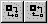

SketchPad 是 ContamW 屏幕的房间，您可以在其中绘制要分析的建筑物的示意图。这种表示形式是一组简化的平面图，代表建筑物的楼层。 SketchPad 由不可见的单元格数组组成，您可以在其中放置各种图标以形成建筑物的示意图。 SketchPad 用于建立相关建筑特征的几何关系，不一定用于生成建筑物的比例表示。它应用于创建一个简化的模型，其中墙壁、房间和气流路径在拓扑上与实际建筑物相似。
伪几何
虽然 ContamW 不要求您按比例绘制建筑平面图，但 SketchPad 确实提供了将比例值分配给 SketchPad 单元格的功能。您可以选择显示这个所谓的 伪几何 通过 项目选项 ContamW 配置的。当您在 SketchPad 上绘图时，这将在状态栏中提供尺寸。它还将为您提供墙壁、房间和管道的缩放信息。当您突出显示墙壁图标时，它将提供墙壁房间，这在定义与墙壁关联的气流路径图标的乘数时非常有用。当伪几何模式被激活时，将为房间体积（基于缩放的地板面积）和管道长度提供默认值。为了区分伪几何值和保存在 prj 文件中的实际值，在 SketchPad 中出现时，缩放值将包含在“{}”中 状态栏 。此功能旨在简化与能量分析软件（例如 TRNSYS 和 EnergyPlus）的耦合，这些软件需要几何信息才能执行能量相关计算（请参阅 与 TRNSYS 合作 ).
插入符号
使用 ContamW 时，您会注意到 SketchPad 上有一个闪烁的方块。这就是所谓的系统 插入符 ，它是单个 SketchPad 单元格的大小。这个 插入符 与许多文字处理应用程序中常见的闪烁垂直条是同一回事。的 插入符 指示 SketchPad 中当前选定的单元格。状态栏中出现的任何与图标相关的信息都与该图标的位置相关联。 插入符.
移动插入符号
要移动 插入符 在 SketchPad 周围，您可以使用键盘箭头键，也可以用鼠标移动系统光标并单击 鼠标左键 设置插入符位置。您还可以将箭头键与 转变 and 控制键 键来移动 插入符 更快。
Shift + 箭头键 移动 插入符 沿箭头方向 10 个单元格。可以在 ContamW 配置中修改要移动的单元格数量（请参阅 单元格/图标大小 在 配置 ContamW 部分）。
Ctrl + 箭头键 移动 插入符 到箭头方向的下一个图标
SketchPad 操作
您将使用 SketchPad 执行的具体操作如下：
SketchPad 模式
SketchPad 共有三种基本模式： 正常 , 结果 and 风压 。 SketchPad 模式基本上指的是 SketchPad 上显示的信息类型。您可以通过查看中的项目来判断程序处于什么模式 查看 菜单以查看哪一个旁边有标记。
控制超元件/超级节点SketchPad
随着新的控制超元件的出现，出现了 SketchPad 的另一种用途来创建和编辑超元件和超级节点（请参阅 控制超元件 在 使用控件 部分）。使用超元件时，仅启用控件绘图工具以及定义控制网络图标的功能。此 SketchPad 通过以下方式激活 数据 → 控制 → 超元件... 菜单项。当超元件 SketchPad 处于活动状态时，SketchPad 的左上角将显示“超元件：”，后跟当前显示在 SketchPad 上的超元件的名称。使用超元件时，还将显示“控制超元件”对话框。 超级节点 SketchPad 只能修改现有控制子节点图标，因此控制绘图工具将被禁用，删除控制网络图标的功能也将被禁用。超级节点 SketchPad 通过实例化现有控制超元件或双击超级节点图标来激活。当超级节点 SketchPad 处于活动状态时，SketchPad 的左上角将显示“Super Node:”，后跟当前显示在 SketchPad 上的超级节点的名称。使用超级节点时，还将显示“超级节点数据”对话框（请参阅控制超级节点）。
缩放 SketchPad
您可以更改 SketchPad 上显示图标的单元格的大小，以便在 SketchPad 上放大和缩小平面图。屏幕上显示的信息量取决于分辨率和单元格大小。可以使用工具栏上的两个缩放按钮及其关联的键盘快捷键（如下所示）来完成缩放，或者更改“项目配置属性”对话框的“单元格/图标大小”页面上的“当前单元格/图标大小”，可通过 View→O 选项... 菜单选择（参见 单元格/图标大小 ).

键盘快捷键：
Ctrl + 向上翻页 增加单元大小
Ctrl + 向下翻页 减小单元尺寸
您可以获得 SketchPad 绘图的图像，以便使用 Windows 打印屏幕功能进行打印或编辑。为此，请调整 ContamW 窗口的大小并按 Alt+打印屏幕 键盘上的 将当前窗口复制到 Windows 剪贴板。然后您可以立即将图像粘贴到所需的程序中。例如，您可以将图像粘贴到 Windows 画图程序中进行编辑或直接粘贴到文字处理程序中。然后，您可以从这些程序中的任何一个打印图像。
您可以使用以下命令将当前显示关卡的 SketchPad 图像保存到 Windows 位图 (.BMP) 文件： 文件 → 将 SketchPad 保存到 .BMP 文件... 菜单项。将出现“另存为”对话框，允许您为文件命名。该文件将包含基于当前单元格/图标大小和颜色设置的整个 SketchPad。